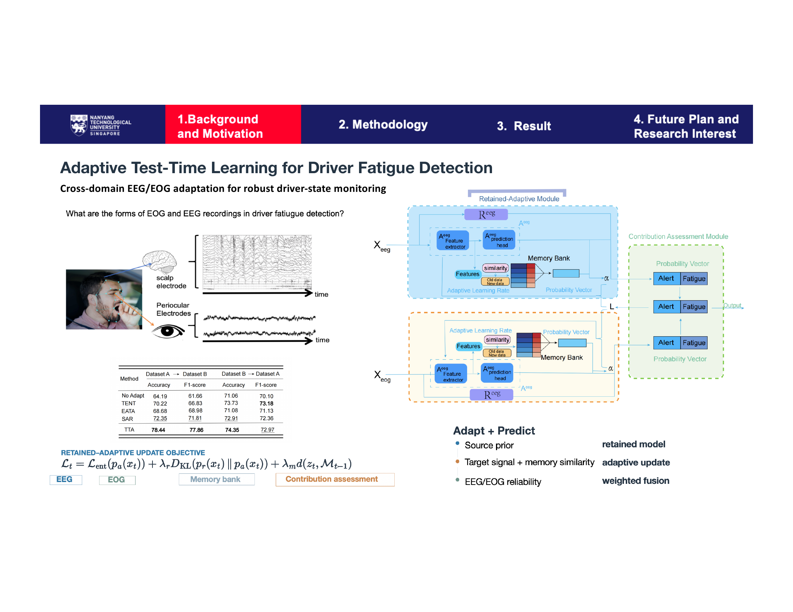

About
I am a transportation engineering researcher with international academic training and hands-on project experience. My undergraduate journey at Beijing Jiaotong University and Delft University of Technology, advised by Prof. Yonglei Jiang and Prof. Irene Martinez, provided a strong foundation in transportation systems, network modeling, and data-driven analysis. My undergraduate thesis focused on leveraging network topology to predict trip distance distributions (ToD) across China and the Netherlands.
I have led and contributed to projects at the intersection of graph neural networks, intelligent transportation systems, and human-centered mobility, including:
- Driver fatigue detection via EEG-based deep learning with adaptive test-time learning, submitted to IEEE T-ITS, collaborated with the Nanyang Technological University.
- Freight train image recognition at UC Irvine, improving night-time detection accuracy with GIS signal integration.
- AI-based robotics navigation and path planning at Cambridge University.
My experience extends beyond academia. At the Western China Internet of Vehicles and China Merchants Smart City Institute, I worked on vehicle–road–cloud integration, white papers, and large scale urban mobility demonstrations which strengthened my ability to bridge research with practice.
Currently, I am pursuing my MS in Civil & Environmental Engineering at UCLA, advised by Prof. Youngseo Kim. My research focuses on solving design and operational challenges in complex, interconnected transportation and logistics systems, with a special emphasis on human behavior and decision making.
Education
- University of California, Los Angeles (UCLA) — M.S. in Civil & Environmental Engineering (Transportation), 2025– (advised by Prof. Youngseo Kim)
- Beijing Jiaotong University (BJTU) — B.Eng. in Traffic & Transportation, GPA 3.77/4.0 (WES 3.83)
- Delft University of Technology (TU Delft) — Visiting research under Prof. Irene Martínez
- University of California, Irvine (UCI) — Exchange program, GPA 4.0/4.0
- The Hong Kong Polytechnic University (PolyU) — Exchange student, GPA 4.0/4.0
Research
Interests
- Topics: Transportation demand modeling, travel behavior, network optimization, smart mobility systems
- Methods: Discrete choice modeling, convex optimization, graph-based learning, reinforcement learning
Projects
PD-MUSE is a convex primal–dual framework for estimating multinomial, nested, and cross-nested logit models. It replaces the classical maximum likelihood objective with entropy regularization and moment constraints, recovering utility parameters and choice probabilities simultaneously. This is a series of two works:
Methodology (Meena*, Tang, Kim): Develops the bi-level and one-shot formulations for MNL, NL, and IPDL. Establishes the exact MLE equivalence for MNL and the score decomposition for structured models. Target: TR Part B.
Empirical application (Tang*, Kim): Applies PD-MUSE to UCLA Mobility SPRP data for travel demand estimation in Los Angeles. Target: TR Part A.

This project builds a unified convex formulation that integrates destination choice (MNL), mode choice (nested logit), and route choice (path-size logit) with Beckmann-style network congestion. Using the LA-Sim network and PeMS vehicle detector station data, the framework jointly estimates demand parameters and predicts link flows in a single estimate-then-predict pipeline, validated against observed hourly flow profiles on LA corridors.

This work tackles the cross-subject distribution shift in EEG-based fatigue detection by introducing a retained-adaptive test-time adaptation module. A memory bank stores source-domain prototypes and computes sample-wise similarity to modulate learning rates at inference. A contribution assessment module fuses EEG and EOG predictions with reliability-weighted scoring, achieving state-of-the-art accuracy across the SEED-VIG benchmark without target-domain labels. Submitted to IEEE T-ITS.

This undergraduate thesis project investigates how road network topology shapes travel demand. Using graph embedding techniques on urban networks in China and the Netherlands, the method extracts structural features that predict trip distance distributions (ToD) and origin-destination patterns without requiring full travel survey data, leveraging the inherent geometry and connectivity of transportation networks.

A collaborative project with Cambridge University exploring AI-driven path planning for autonomous robotics. The work applies reinforcement learning and behavioral decision models to navigation tasks, bridging transportation choice theory with robotic motion planning in complex environments.

Publications
Journal Papers
- Tang, S., & Zhou, X. "Adaptive Test-Time Learning for Driver Fatigue Detection." IEEE Transactions on Intelligent Transportation Systems, major revision. [Major Revision]
- Meena, K. K.*, Tang, S., & Kim, Y. "PD-MUSE: Primal-Dual Maximum-Utility Structured Estimator for Discrete Choice Models." Manuscript in preparation; target: Transportation Research Part B.
- Tang, S.*, & Kim, Y. "PD-MUSE: Empirical Application with UCLA Mobility SPRP Data." Manuscript in preparation; target: Transportation Research Part A.
- Tang, S., & Kim, Y. "LA Corridor Validation via MaxEnt Route Choice with PeMS (VDS) and LA-Sim Network." Manuscript in preparation; target: Transportation Research Part B.
Conference Papers
- Tang, S. "Review on Short-term Traffic Flow Prediction Methods Under Big Data." International Conference on Mechatronics and Smart Systems, 2023.
Presentations
- Tang, S. "PD-MUSE: Primal–Dual Maximum-Utility Structured Estimator for Discrete Choice Models." Presentation, 2026 INFORMS Annual Meeting, San Francisco, CA, November 1–4, 2026. [Upcoming]
- Tang, S. "Convex Reformulations for Logit-Family Choice Models: A Primal–Dual Estimator and Open-Source Implementation." Talk, The Fourth ITS Irvine Symposium on Emerging Research in Transportation, UC Irvine, 2026.
Experience
- Graduate Research Assistant, UC Institute of Transportation Studies (UC ITS) — CalTranPlanner: California Transportation Planning Tool for Statewide Data-Driven Optimization (Oct. 2025–Sept. 2026)
- Cloud Control Technology Intern, Western China Internet of Vehicles — Chongqing Intelligent Networked NEV Demonstration Zone project.
- Vehicle‑Road Coordination R&D Intern, China Merchants Chongqing — Project plans, white papers, and smart city integration.
Awards
- Best Diplomatic Presence Award — 2023 Model APEC
- Beijing Municipal Second Prize — Internet+ Innovation & Entrepreneurship
- First Prize — 21st Century Cup National English Speaking Competition (Top 5% at BJTU)
- First Prize — BJTU Innovation & Entrepreneurship Qualification Trials
- School Class Scholarship for Academic Excellence, First Prize (top 1%)
Contact
For collaboration or questions, feel free to reach out via email or LinkedIn. Full CV available here.